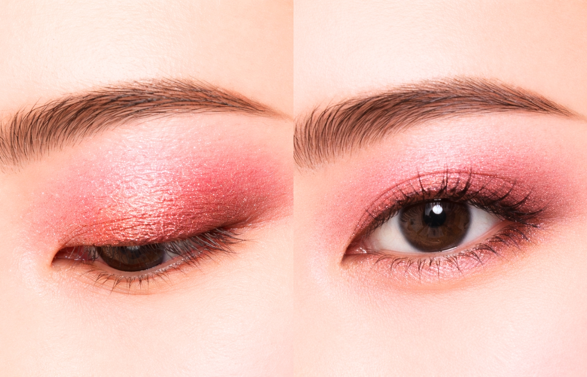
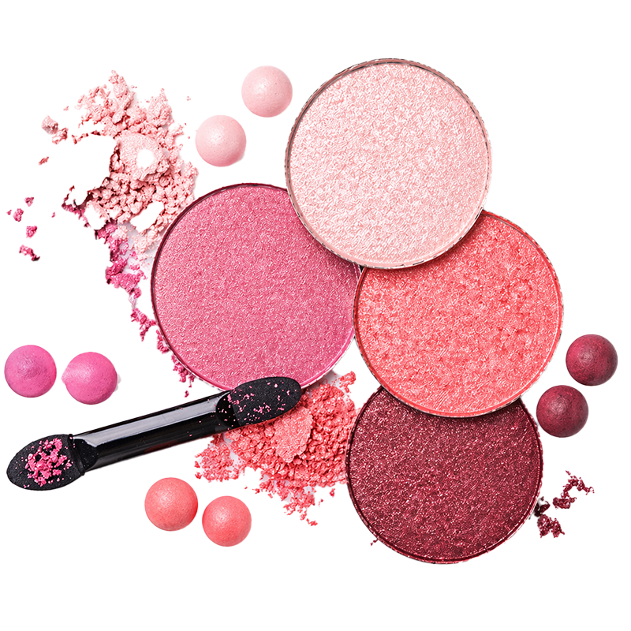
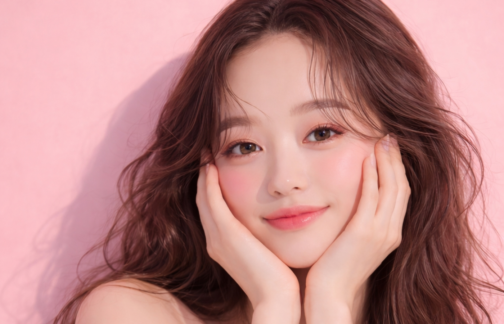

春メイク、こんな悩みありませんか？
- ✓ ピンクが似合わない
- ✓ 腫れぼったく見える
- ✓ グラデがうまくできない
- ✓ 朝は時間がない

その悩み、このパレットで解決
配色はすべて計算済み。 重ねるだけで自然なグラデーションが完成。

仕上がるのは、ちょうどいい春感
- ふんわり透明感のある目元
- 頑張りすぎないのに可愛い
- どんなシーンでも浮かない

春らしい華やかさを添えるピンクトーン
春らしい華やかさを添えるピンクトーンが、やわらかくまぶたに溶け込み、 軽やかなきらめきと血色感をそっと引き出します。

ふんわり可愛い雰囲気
ふんわり甘い春ピンクがまぶたをやさしく包み込み、自然な血色感をプラス。ひと塗りで、思わず笑顔になれる愛らしい目元に。